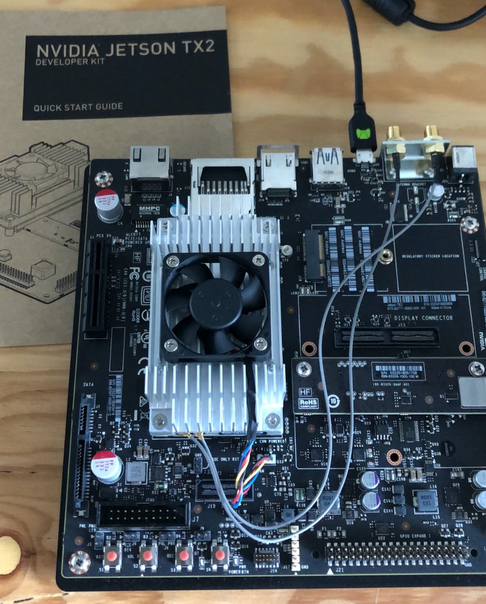

This post is intended for those who want to flash their Jetson TX2 board from an Ubuntu VM without a desktop environment running.
Setting up a Jetson TX2 must be done through NVidia's SDK Manager. Per the requirements, it needs an Ubuntu Desktop not running in a VM. I have a Macbook and no intention of adding a Linux dual boot next to macOS on my always-too-small hard drive, so I gave it a go.

This repository contains all the tools and instructions necessary to achieve just that in a minimum amount of commands possible: it uses a Virtual Box VM configured through Vagrant, and xvfb underneath to bypass the need for a GUI.
Recovery Mode
Even if the instructions in the quick start guide of the devkit make it seem like an absolute nightmare, putting the board in Recovery mode is quite straightforward:
- Power up the board (plug it and hit the PWR button)
- Hold the REC button
- Hit the RST button
- Release the REC button after about 2 seconds